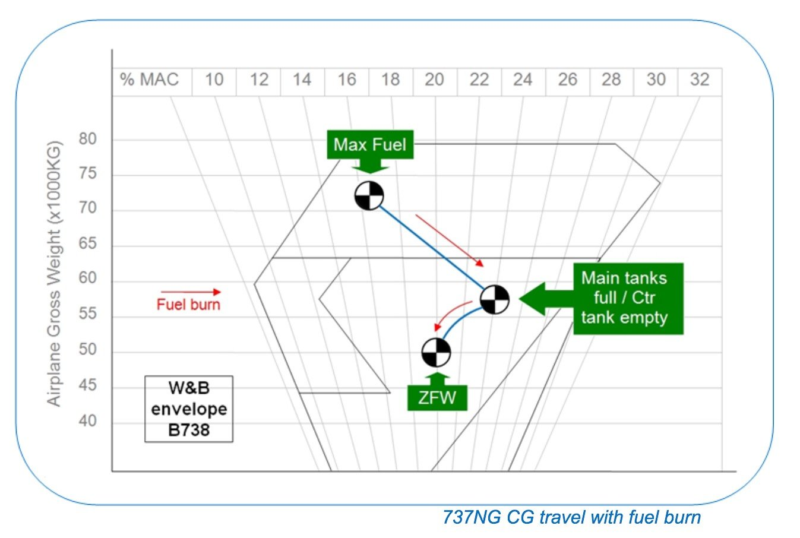
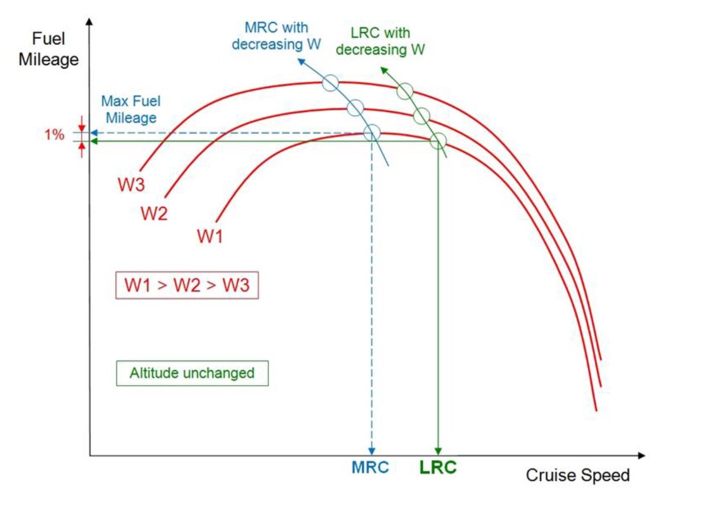

Lesson 07: En-route Climb and Cruise
Learning objectives
- Explain the cost index and its effect on speeds.
- Describe the climb profile and the crossover altitude.
- Choose a cruise altitude and speed: optimum and maximum altitude, step climb, MRC, LRC and ECON.

Cost index
Cost index (CI) = time-related costs / fuel costs. A low CI flies slower and burns less fuel; a high CI flies faster to save time-related costs. CI 0 gives the maximum range cruise speed.
Climb
The economy climb speed increases with weight and cost index. Climbing at constant IAS, the TAS increases; at constant Mach, it decreases. The change from IAS to Mach happens at the crossover altitude (around FL290 for 300 kt / M0.78).

Optimum and maximum altitude
- The optimum altitude gives the best fuel mileage (or, at ECON speed, the lowest cost). It rises as weight decreases. Stay within about ±2,000 ft (±1,000 ft in RVSM airspace): 2,000 ft below optimum costs about 1 % fuel, 2,000 ft above about 2 %.
- The maximum altitude is the lowest of the certified ceiling, the thrust-limited altitude (residual climb 100 ft/min in cruise, 300 ft/min in climb) and the manoeuvre-margin altitude (buffet margin 1.3 g ≈ 40° bank; optimum altitude gives about 1.5 g).


Only LNAV protects the bank angle against the thrust limit. Otherwise fly at least 10 kt above the lower amber band and keep the bank below 10°. The FMC maximum altitude does not account for stick-shaker speeds.
Cruise speed
- MRC — maximum range cruise: the best fuel mileage for the weight (CI 0); poor speed stability.
- LRC — long range cruise: about 1 % less mileage but 3–5 % faster, with better speed stability.
- ECON — speed for the minimum total cost, from MRC at CI 0 up to the cruise thrust limit. Tailwind lowers it, headwind raises it. Typical airline CI values give a speed between MRC and LRC.


Key takeaways
- CI = time costs / fuel costs; CI 0 = MRC.
- Optimum altitude rises as weight decreases; step climb to stay within ±2,000 ft (RVSM ±1,000 ft).
- Maximum altitude: certified, thrust-limited or buffet-limited (1.3 g), whichever is lowest.
- LRC ≈ 1 % less mileage than MRC but 3–5 % faster.
Knowledge check
What does a cost index of zero give?
- Maximum speed
- Maximum range cruise (minimum fuel)
- Long range cruise
- Holding speed
Answer: B. With no time-related cost, the FMC minimises fuel: MRC.